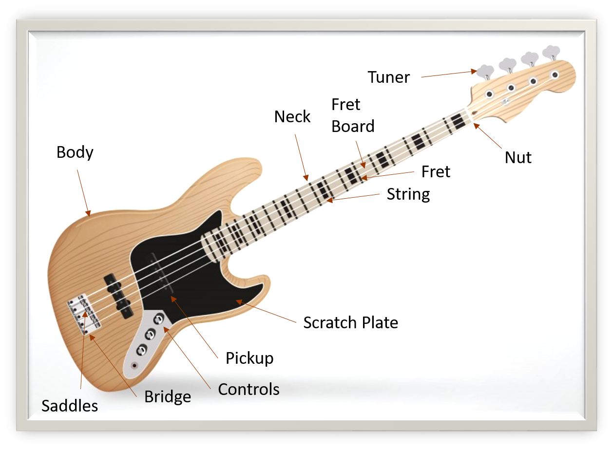

Body – The wide part of the bass. It's rests against your body and holds all the electrics
Scratch Plate – A plastic plate on the bass guitar body. It's protects the damage by your plucking hand.
Neck – The long thin part. your fretting hand uses to change the notes you played
Fret-board – Covering the playing part of the neck and provides a surface for the fretting hand
Fret – Thin metal bars. Those are make contact with the strings in specific places to control the pitch of the notes played.
String – The long metal wires. Those are are stretched and plucked to make the sound On the bass guitar. It's always consist of central wire with another wire bound round the outside. The binding wire may be round wound or flat wound, and the former creating a much more ringing sounds.
Nut – It's a fixed point at the end of the neck. Nut's are using the strings pass over to reach the tuners
Bridge – Provides a fixed point towards the end of the body. that the strings pass over to reach their anchor points
Saddles – The part of the bridge. Saddles string makes contact with, they are often adjustable to help the action and ensuring the strings play in tune all down the neck
Tuner – Hold the strings in place at the end of the neck and allow the tension to be adjusted in order to tune the strings
Pickup – Transmit the sound of the strings to the output jack, The sounds are influenced by the solid parts of the bass as the type of strings.
Controls – Adjust the volume and tone of the sound on it’s way to the output. A variety of controls can be present including one or more volume adjusters.
Playing Techniques
There are several techniques for playing the bass guitar, depending on the music style of you're playing the guitar and the effect of you wish to achieve. Some of the more common techniques, artists who use them.
1. Slap and Pop
The slap and pop technique involves thumping or slapping the strings in your thumb. Slap and pop technique is most often used in funk music. its place in rock and fusion styles. slap and pop bassists include Larry Graham of Sly and the Family Stone, and Flea of the Red Hot Chili Peppers Famously.
2. Picking
Picking involves using a pick to strum the bass and the picking providing greater accuracy and speed, than your fingers. The Picks come in varying thicknesses are made of a variety of materials. Picking styles are used in a variety of music styles by artists like Kim Deal of The Pixies and Roger Waters of Pink Floyd
3. Palm Muting
It's a playing technique for bass guitars. It's plucking the strings while the damping is in effects. palm muting produces a muted sound..
4. Fretting
Fretting is a blanket term technique. Fretting involve striking, plucking, or adjusting the strings along the neck of the guitars. your fingers Placing on different point then neck to make different notes is fretting, as is moving the finger it's make a vibrating sound. Some bassists play the fret by tapping , plucking the strings to make sounds.